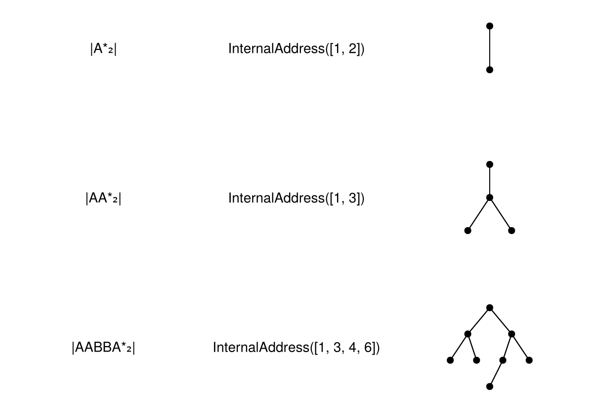

using Mandelbrot, TestInternal Addresses
The kneading sequence $AB$ (angle $1/3$, period 2) has internal address $[1,2]$:
@test address(InternalAddress(KneadingSequence(1//3))) == [1, 2]Test PassedThe kneading sequence $AAB$ (angle $1/7$, period 3) has internal address $[1,3]$:
@test address(InternalAddress(KneadingSequence(1//7))) == [1, 3]Test PassedHubbard Trees
The Hubbard tree for $AB$ has 2 vertices:
@test length(leaf_vertices(HubbardTree(InternalAddress([1, 2])))) == 2Test PassedThe Hubbard tree for $AAB$ has 3 leaf vertices and 1 branch vertex:
H = HubbardTree(InternalAddress([1, 3]))
@test length(leaf_vertices(H)) == 3
@test length(branch_vertices(H)) == 1Test PassedSummary Table
using CairoMakie, BrotViz, Mandelbrot
kneadingtable([1//3, 1//7,7//9])
This page was generated using Literate.jl.